|
| Courtesy Hong Kong Space Museum, Photograph by Chee-kuen Yip. |
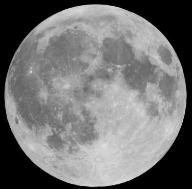 |
| Courtesy K.M. Lee |
The dark areas are called maria (singular mare), the seas. They are in fact the solidified lava flows, which occurred after the formation of the lunar crust. Most of the "hills" are craters, not volcanoes. The in-fall of massive objects onto the surface of the Moon creates those craters. The large number of craters on the Moon implies that there are very little lunar activities. In other words, the Moon is dead.
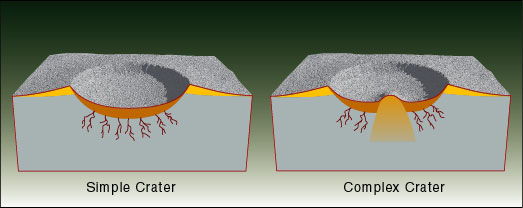
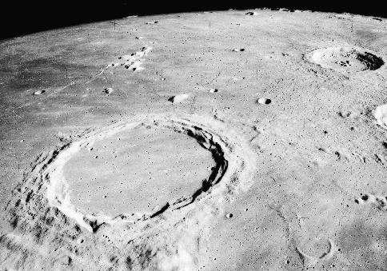 | |
| Courtesy NASA. |
The Moon is the only celestial object other than Earth that humans have visited. From the late 60s to the early 70s, U.S.A. had six crewed missions to the Moon, called the Apollo Missions. Some footage of the Apollo 16 is shown here.
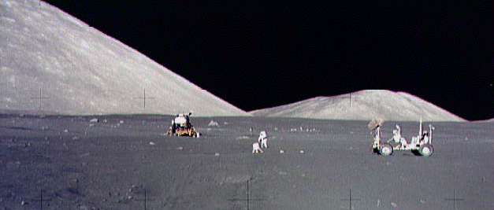 |
| Courtesy NASA. |
The time between successive new Moons, the synodic period, is 29.5 days. Interestingly, the rotational period of the Moon relative to the Earth is exactly the same as the synodic period. This matching is called the synchronous rotation. Thus, from the Earth, we can only see one side, by definition the near side, of the Moon. This is not a coincident. The center of mass of the Moon is not at the geometric center. Instead, it is closer to the Earth. Together with the mutual gravity, this shift of the center locks the revolution and rotational rates.
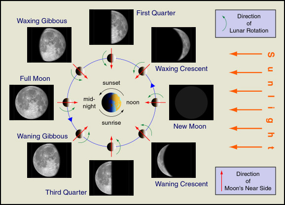
There are two major lunar formation models. In the binary accretion model, the Moon was created out of the same cloud of material forming the Earth. The giant impact model, which is more popular, suggests when the Earth was young, a Mars-sized object hit the Earth. Some material from both bodies accreted to form the Moon. When the Moon solidified, the gravity of the Earth shifted the center of mass of the Moon.
Since the Moon only reflects sunlight, the amount of its surface that is illuminated, its phase, varies at different times. The cycle starts from new moon to waxing crescent, first quarter, waxing gibbous, full moon, waning gibbous, third quarter, waning crescent, then to new moon again.
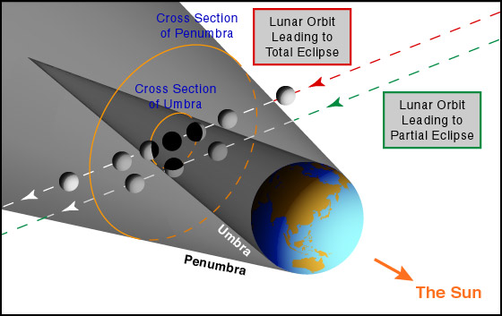
In the following photos, the Moon is going through the total lunar eclipse. Note the exposure time of the total eclipse images is longer than the first one. The totally eclipsed Moon is much dimmer than the partially eclipsed Moon. (The white dot in the photos is a background star.)
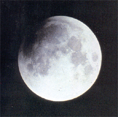 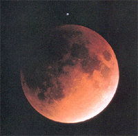 |
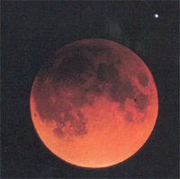 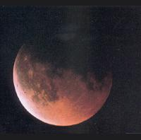 |
| Courtesy Hong Kong Space Museum, Photograph by Hin-fan Wong. |
There will be lunar eclipses if the Moon is "behind" the Earth. Then, why we do not have lunar eclipse every month? It is because the plane of the lunar orbit does not coincide with the plane of the Earth's orbit. So, for most full moons, the Moon is either south or north of the orbital plane of the Earth. For the same reason, we do not see solar eclipse every new moon.
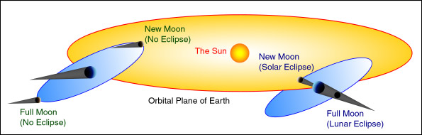
If you reverse the roles of the Moon and the Earth in the above paragraphs, we will get solar eclipses instead of the lunar eclipses. The most common kind of solar eclipses is the partial solar eclipse. (Warning: It is very dangerous to observe the Sun without protection. You may be blind as a result. We will discuss how to watch the Sun safely in Chapter 11.)
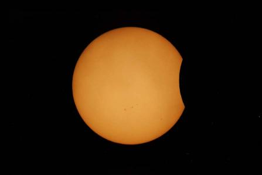 |
| Courtesy Hong Kong Space Museum, Photograph by Chee-kuen Yip. |
If you are at the right position at the right time, you might see the total solar eclipse. However, because the path of the total eclipse is very narrow, if you stay in one place and wait, probably you will not see even one total solar eclipse in your life time.
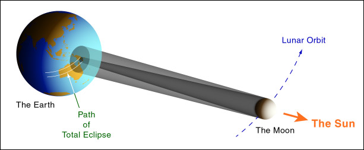
Since total solar eclipse is a very stunning experience, people will travel around the globe to watch it. The following photos will give you some flavors of how a total eclipse is. Just before the total eclipse, owing to the uneven rim of the Moon, you will see some disconnected parts of the Sun. Then, only one tiny part of the Sun is visible, as shown in the photo below. This is called the diamond ring.
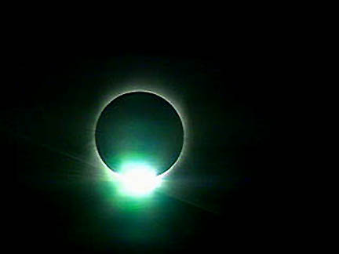 |
| Courtesy NASA. |
During the total eclipse, the sky is dark enough to see bright stars and the planets, if present. The main disk of the Sun is blocked by the Moon. The much dimmer corona becomes visible. Typically, the total eclipse lasts about two minutes. Then, you see the diamond ring again and the total eclipse is over. Some of the Youtube clips are here.
|
| Courtesy Hong Kong Space Museum, Photograph by Chee-kuen Yip. |
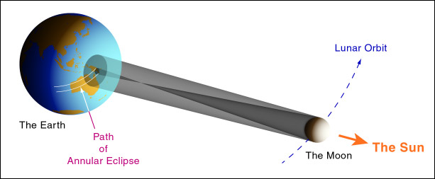
Due to the tidal friction, the Moon is receding from us. Tens of thousand of years later, the angular size of the Moon will be so small that there will be no total solar eclipse anymore.